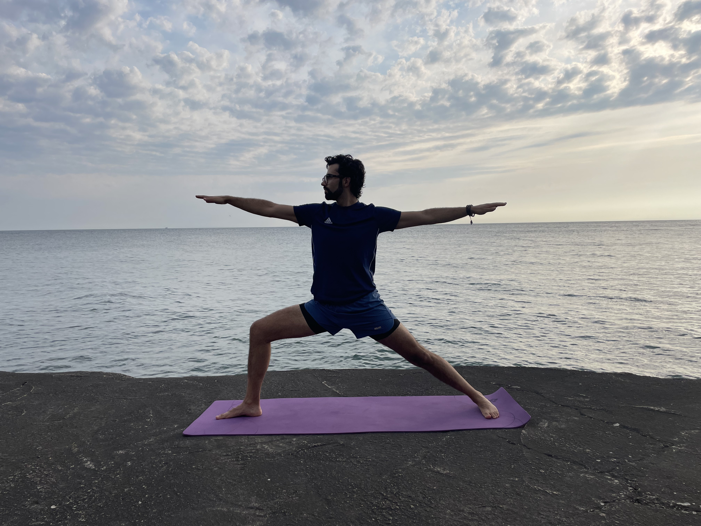

My approach to teaching yoga is centered on making it accessible and enjoyable for everyone, no matter where you are on your journey. I offer beginner-friendly classes designed for every body. If you have any concerns or feel that yoga might not be for you, please don’t hesitate to reach out—I’m here to chat and help you find your way into yoga.
I also host a free, beginner-friendly 1-hour yoga class on Zoom most Mondays at 6pm CDT. If you’re interested in joining, just send me an email, and I’ll get you set up!
Yoga is something I love sharing with others, especially those who may not have had easy access to it before. If you’re part of a group that’s interested in a class, I’d be delighted to connect. Let’s work together to make yoga accessible to everyone.
According to the National Center for Complementary and Integrative Health, research suggests that yoga may:
Yoga is generally considered a safe form of physical activity for healthy people when performed properly, under the guidance of a qualified instructor. However, as with other forms of physical activity, injuries can occur. The most common injuries are sprains and strains, and the parts of the body most commonly injured are the knee or lower leg. Serious injuries are rare. The risk of injury associated with yoga is lower than that for higher-impact physical activities.
Older adults may need to be particularly cautious when practicing yoga. The rate of yoga-related injuries treated in emergency departments is higher in people age 65 and older than in younger adults.
To reduce your chances of getting hurt while doing yoga:
This information is taken from the National Center for Complementary and Integrative Health. Please take a look at their website to learn more. Feel free to ask me any questions.